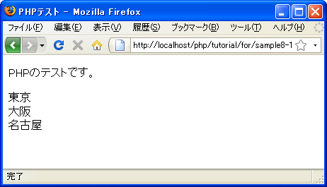

foreach文
foreach文は配列に含まれる各要素の値を順に取り出し処理したい場合に便利な文です。書式は次のようになっています。
foreach (配列変数 as 変数){
実行する処理1;
実行する処理2;
}
※配列については「配列」を参照して下さい。
要素を取り出す配列と、取り出した要素の値を格納する変数を指定します。foreach文による繰り返しでは、配列に含まれる要素の数だけ繰り返しが行われ、1回繰り返しが行われるたびに配列に含まれる要素の値を変数に代入します。
具体的な例で考えてみます。
$preflist = array('東京', '大阪', '名古屋');
foreach ($preflist as $pref){
print $pref;
}
この時、次のように実行されます。
1) 配列「preflist」から要素の値「東京」を変数「pref」に代入
2) 変数「pref」の値を出力
3) ブロックの最後に達したのでforeach文の先頭に戻る
4) 配列「preflist」から要素の値「大阪」を変数「pref」に代入
5) 変数「pref」の値を出力
6) ブロックの最後に達したのでforeach文の先頭に戻る
7) 配列「preflist」から要素の値「名古屋」を変数「pref」に代入
8) 変数「pref」の値を出力
9) ブロックの最後に達したが、配列に含まれる要素の数だけ繰り返しを行っ
たのでforeach文を終了
while文やfor文などと異なり繰り返しが終了される条件式は存在しません。配列の要素の数だけ繰り返して終了となります。
注意する点としては配列の要素そのものを取り出しているわけではなく、要素の値を変数にコピーして代入しているだけという点です。foreach文を使って配列の要素の値を変更したい場合には「foreach文で配列要素の値を変更する」を参照して下さい。
なおwhile文と同じく「break」や「continue」を利用することが可能です。
サンプルプログラム
では簡単なプログラムで試して見ます。
<!DOCTYPE html PUBLIC "-//W3C//DTD XHTML 1.0 Transitional//EN"
"http://www.w3.org/TR/xhtml1/DTD/xhtml1-transitional.dtd">
<html xmlns="http://www.w3.org/1999/xhtml" xml:lang="ja" lang="ja">
<head>
<meta http-equiv="Content-Type" content="text/html;charset=UTF-8" />
<title>PHPテスト</title>
</head>
<body>
<p>PHPのテストです。</p>
<p>
<?php
$preflist = array('東京', '大阪', '名古屋');
foreach ($preflist as $pref){
print $pref.'<br />';
}
?>
</p>
</body>
</html>
上記のファイルをWWWサーバのドキュメントルート以下に設置しブラウザからアクセスすると次のように表示されます。

( Written by Tatsuo Ikura )

著者 / TATSUO IKURA
初心者～中級者の方を対象としたプログラミング方法や開発環境の構築の解説を行うサイトの運営を行っています。